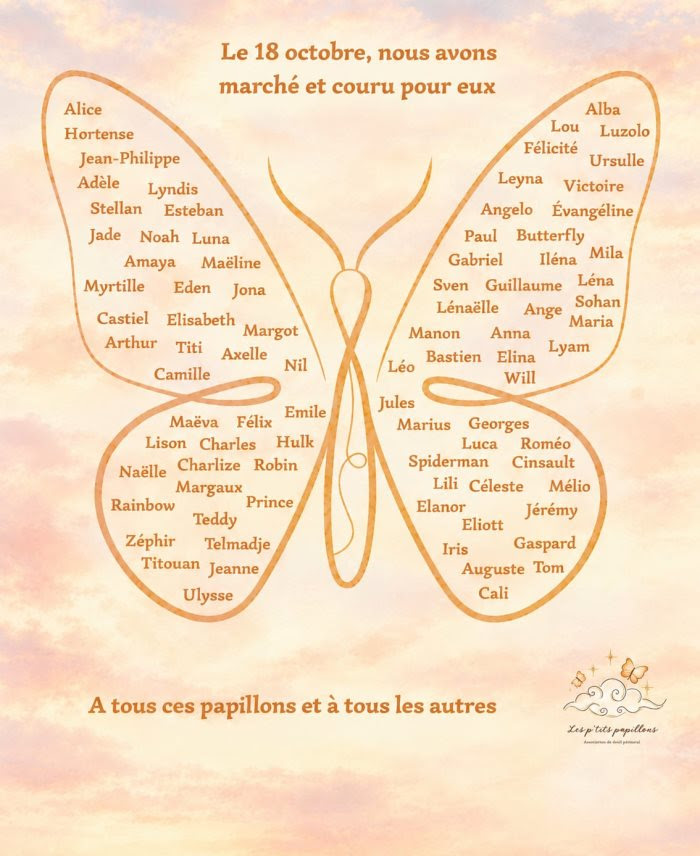

Retour sur la première édition – Papillons vers les étoiles
Le 18 octobre 2026, la première édition de « Papillons vers les étoiles » a rassemblé plus de 300 participants de différents horizons autour d'une course et marche connectée, organisée partout en France mais aussi en Angleterre, en Allemagne et en Belgique.
À leur rythme, en marchant ou en courant, chacun a contribué à cette mobilisation collective en faveur de la reconnaissance du deuil périnatal et du soutien aux familles concernées.
Cette première édition a permis de donner de la visibilité à cette cause, de créer une dynamique solidaire et de transformer chaque kilomètre parcouru en un geste de soutien. Un grand merci à l'ensemble des participants et des soutiens qui ont contribué à faire de cette première édition une réussite.
Nous vous attendons encore plus nombreux l'année prochaine ! Rendez-vous en Octobre 2027 pour la prochaine édition.

Contacts
Relais de lumière
À l'occasion de la Journée de sensibilisation au deuil périnatal, Les P'tits Papillons ont organisé un Relais de lumière, une initiative ouverte à tous pour rendre hommage aux bébés partis trop tôt et témoigner de notre soutien aux familles concernées. Le principe : faire vivre un moment de recueillement et de partage, où que l'on soit, en allumant une bougie ou en participant selon la forme de son choix. La première édition, organisée le 15 octobre, a mobilisé de nombreux participants autour de cette démarche symbolique et solidaire.
Rendez-vous en décembre pour une nouvelle édition !
Nous vous invitons dès à présent à rejoindre ce mouvement collectif. Que vous soyez une famille, un proche, un professionnel ou simplement sensible à cette cause, chacun peut participer à sa manière et contribuer à faire rayonner cette initiative.
Ensemble, faisons briller nos lumières et donnons de la visibilité au deuil périnatal.
Qui sommes-nous ?
Les P'tits Papillons est une association loi 1901 créée à l'initiative de mamans concernées par le deuil périnatal.
Elle a pour vocation de contribuer à une meilleure reconnaissance de cette réalité, de soutenir les familles touchées et de développer des actions concrètes en faveur de leur accompagnement.
L'association fédère les initiatives, sensibilise le grand public et travaille à créer des passerelles avec les professionnels et les structures impliqués dans la prise en charge du deuil périnatal.
Sensibiliser : faire connaître le deuil périnatal et favoriser une meilleure compréhension de ses enjeux.
Soutenir : accompagner les familles concernées et encourager les initiatives solidaires.
Agir : développer des actions concrètes auprès des familles et des professionnels de santé.
Faire reconnaître : contribuer à une meilleure prise en compte du deuil périnatal dans la société et les parcours de soins.